About Germany
Germany is a well-developed country in Central Europe. It is famous for its strong economy, engineering, automotive industry, historic cities, castles, and high quality of life. Germany combines rich medieval history with modern advancements. From vibrant cities like Berlin and Frankfurt to stunning Alpine peaks and enchanting forests, the country showcases a wide range of geographical and cultural diversity. It is Europe's largest economy and a global leader in technology, art, and philosophy.
Capital
Berlin
Language
German
Currency
€ Euro
Time Zone
UTC +1 (+2 during summer time)
Important Festivals
See all →
Oktoberfest
World-famous festival in Munich with traditional Bavarian food, music, clothing, and celebrations.
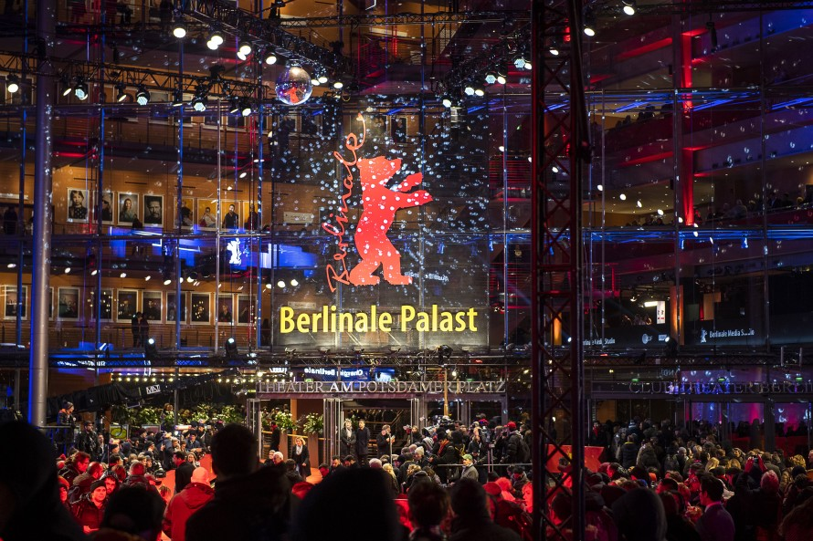
Berlin International Film Festival (Berlinale)
One of the world's leading international film festivals.
Famous & typical Food
See all →Bratwurst
Traditional grilled German sausage.
Currywurst
Sausage served with curry-flavoured tomato sauce.
Top landmarks & cities
See all →
Brandenburg Gate
Historic monument and one of Germany's most famous national symbols.
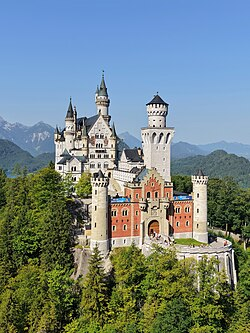
Neuschwanstein Castle
Fairytale-style castle surrounded by mountains and forests.
Thinking of moving to Germany?
Moving to Germany provides solid social safety nets, excellent infrastructure, good wages, and a high standard of living. However, newcomers face a well-known administrative bureaucracy, strict official processes like mandatory address registration, and a formal social culture where learning the German language is vital for long-term integration.
Visit Official agency ↗Events & Festivals
Germany's calendar is full of age-old traditions and lively modern celebrations. Spring brings exciting regional carnivals. Summer features famous rock festivals and international film events. In autumn, traditional harvest and beer celebrations, such as Oktoberfest, take center stage. Winter wraps up with enchanting, fairy-lit Christmas markets that light up every town square.
All festivals
Oktoberfest
September - OctoberA world-famous Bavarian beer festival held every year in Munich. It features traditional dirndls, lederhosen, giant beer tents, Bavarian brass music, carnival rides, and millions of liters of beer.
Berlin International Film Festival (Berlinale)
FebruaryThe Berlin International Film Festival, or Berlinale, is one of the top "Big Three" European film festivals. Each February, it attracts international stars, directors, and movie lovers to Berlin for exciting global cinema premieres.

Cologne Carnival
February - MarchAlso referred to as the "Fifth Season", is a lively street festival. It showcases vibrant costumes, satirical parades, traditional songs, and lots of joy, especially during the Rose Monday celebrations in Cologne.
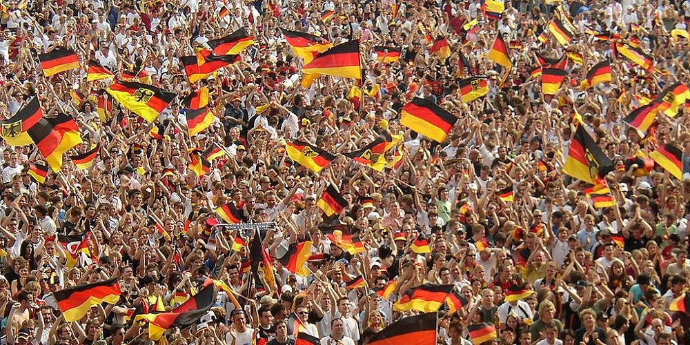
Unity Day
3rd of OctoberCelebrated on October 3rd. This national holiday honors the peaceful reunification of East and West Germany in 1990. The day includes civic festivals, speeches, and concerts.
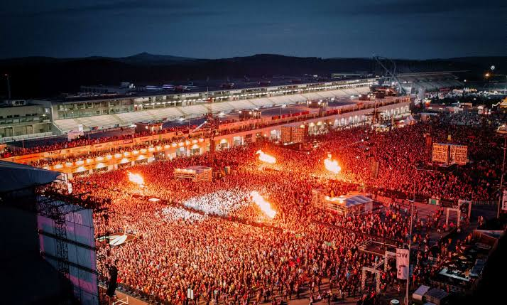
Rock am Ring
JuneOne of Europe's largest open-air rock music festivals. It takes place every year at the Nürburgring racetrack and features legendary rock, metal, and alternative bands from around the world.
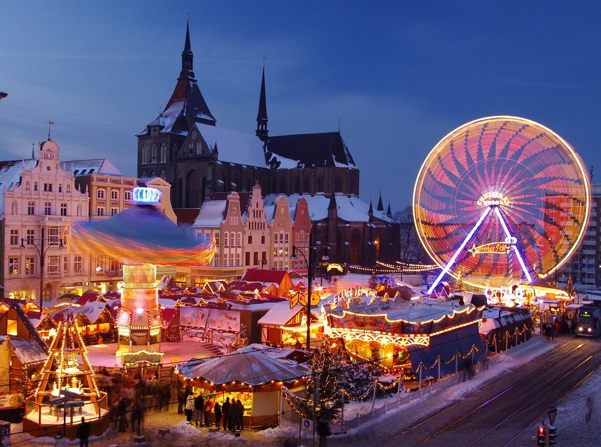
Christmas Markets
November - DecemberCreating a cozy winter atmosphere in town squares all over Germany, these markets have wooden stalls that sell handmade crafts, ornaments, roasted almonds, gingerbread, and hot spiced mulled wine (Glühwein).
Culture
German culture is a lively mix of rich history, deep philosophy, and modern civic duty. With strong regional differences, from Bavarian customs to the northern maritime way of life, the society values community well-being, care for the environment, and practical design. Germans are known worldwide for their technical skills, hard work, and respect for rules (Ordnung). Their culture also includes a rich heritage of classical music, warm gathering customs, colorful festivals, and a strong appreciation for leisure time, family, and nature.
Values & Customs
German customs focus on mutual respect, privacy, and care for the environment. The society values structure, efficiency, and strict adherence to schedules. Recycling, civic duty, and quiet hours (Ruhezeit) are cultural norms respected across the country.
Punctuality Ordnung Sustainability
Art & Traditions
From the musical legacies of Bach and Beethoven to the practical beauty of Bauhaus design, art plays an essential role in German identity. Centuries of folklore continue through regional carnivals, traditional wooden crafts, and seasonal village festivals.
Classical music Folklore Bauhaus Craftsmanship
Religion
Germany's religious background has historically been divided, with Roman Catholicism in the south and west and Protestantism in the north and east. Today, society is mostly secular and embraces growing religious diversity, freedom of belief, and multi-faith communities in major cities.
Pluralism Secularism Christian
Etiquette
German social etiquette values honesty, clear communication, and personal space. A firm handshake and eye contact are essential when greeting someone. Using formal titles (Herr/Frau) is typical until trust develops enough to switch to first names.
Directness Privacy Formal Titles
Food
German cuisine goes well beyond beer and sausages. It focuses on hearty comfort food made from high-quality baked goods, with more than 3,000 types of bread. It features regional meats, potato dishes, and seasonal vegetables like white asparagus (Spargel). You can enjoy these meals with famous Riesling wines or local lagers and pilsners.
Famous Dishes
Bratwurst
Savory grilled German sausage made from pork, beef, or veal. It is seasoned with herbs like marjoram and nutmeg and is traditionally served in a crusty roll with spicy mustard.
Currywurst
Popular street food that consists of steamed and fried pork sausage. It is sliced and smothered in a tangy ketchup sauce, then dusted with aromatic curry powder.
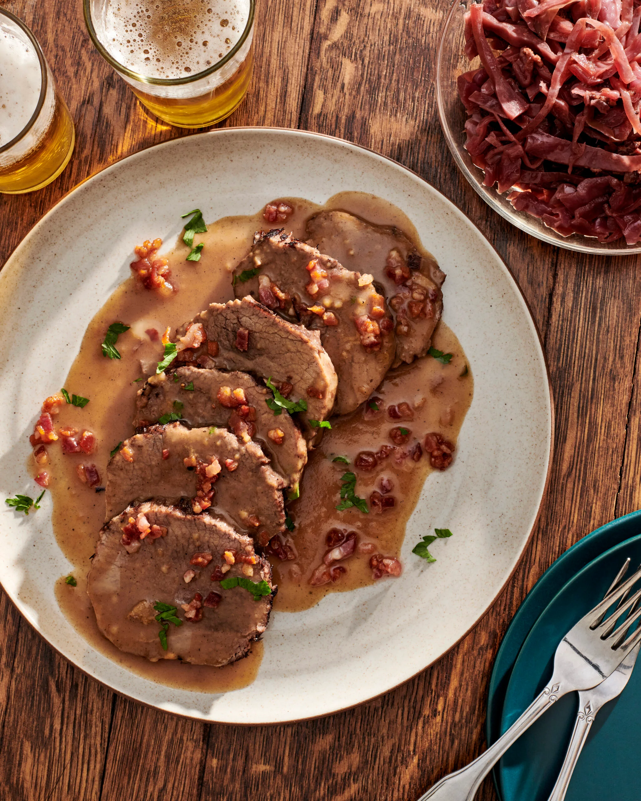
Sauerbraten
This is the classic German pot roast. It is marinated for days in spiced vinegar and wine before being slow-cooked until tender. It is served with sweet-and-sour gravy and red cabbage.
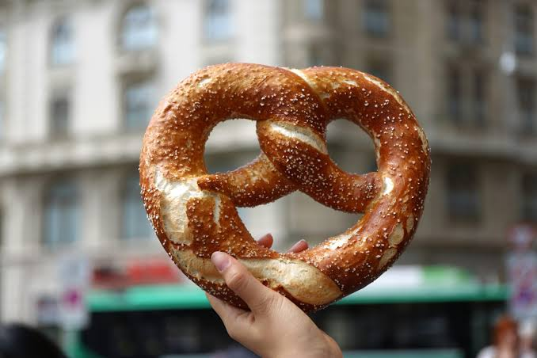
Pretzel (Brezel)
A traditional twisted knot bread that is boiled in lye before baking to achieve a glossy deep-brown crust. It has a soft, chewy center and is topped with coarse salt.
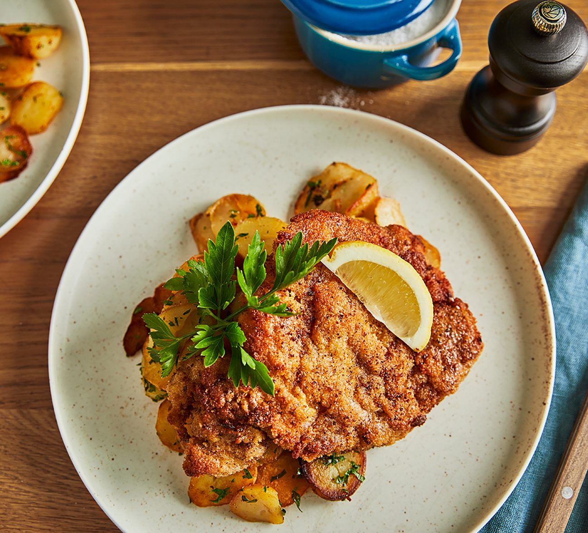
Schnitzel
Tenderized meat cutlet, usually pork or veal, coated in flour, beaten eggs, and breadcrumbs. It is fried until golden and crispy and served with a fresh lemon wedge.
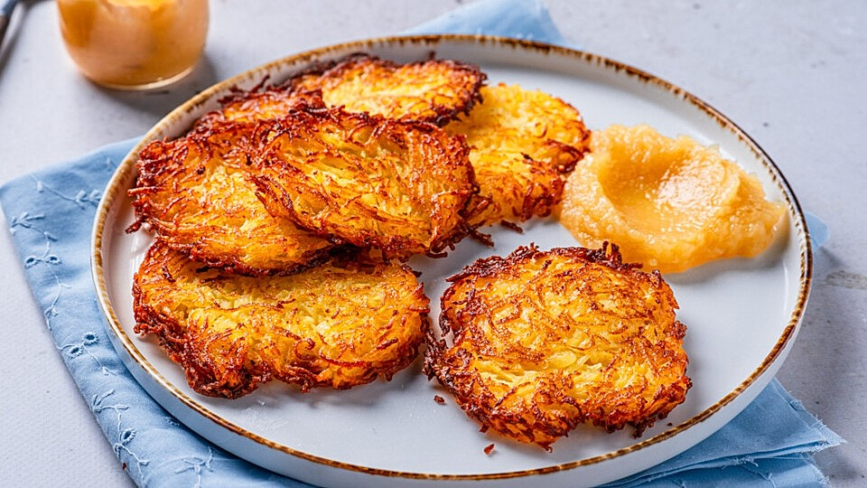
Kartoffelpuffer
Crispy pan-fried potato pancakes made from grated potatoes, flour, and onions. These are commonly served savory with garlic dip or sweet with homemade applesauce.
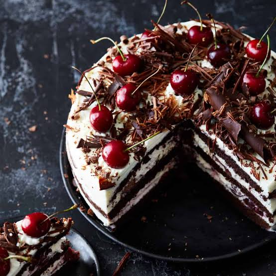
Black Forest Cake
An indulgent multi-layered chocolate sponge cake infused with cherry spirit (Kirschwasser). It is sandwiched with whipped cream, sour cherries, and dark chocolate shavings.
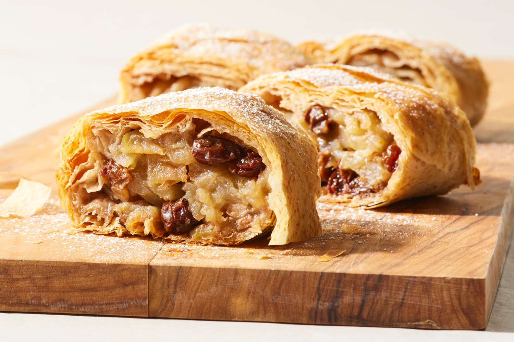
Apfelstrudel
A classic pastry dessert filled with spiced apples, raisins, and toasted breadcrumbs. It is wrapped in paper-thin dough, baked until golden, and served warm with vanilla sauce.
Weather
Germany has a temperate climate with four distinct seasons. Winters are cold, with occasional snowfall, especially in the eastern and southern parts. Spring brings colorful flowers and mild winds, leading into warm summers that are perfect for dining outdoors. Autumn showcases golden leaves and fresh, crisp air.
Montly overview
To be mindful of
Best time to visit
May - SeptemberThis shoulder-to-peak period brings warm, sunny weather, long daylight hours, and blooming landscapes. It is ideal for outdoor castle tours, hiking, river cruises, and enjoying lively outdoor beer gardens without extreme winter cold.
Be wary: Heatwaves & Severe Thunderstorms
Late July - AugustGermany frequently experiences intense summer heatwaves. Most residential buildings, public buses, and budget hotels lack air conditioning. This period also brings severe summer thunderstorms and localized flash flooding, alongside crowded tourist hotspots and high accommodation prices.
Be wary: Freezes & Black Ice Season
January - FebruaryDeep winter brings freezing temperatures, heavy overcast skies, snow, and dangerous black ice (Glatteis) on roads and sidewalks. Daylight drops to just 8 hours, many regional tourist sites close, and local outdoor life slows down significantly.
Be wary: The Year-End Administrative & Business Freeze
Mid-December - Early JanuaryBetween Christmas, New Year, and traditional "bridge days" (Brückentage), public offices, banks, real estate agencies, and hiring companies shut down entirely. If you plan to scout services, view housing, or inquire about official processes, work completely stalls.
Landmarks
The country features centuries of remarkable architecture. Impressive Gothic cathedrals rise above historic riverbanks, while Romantic-era castles sit on misty mountain ridges. Famous sites like Berlin's Brandenburg Gate stand near old city walls, charming timbered villages, and large natural parks such as the Black Forest.
Brandenburg Gate
BerlinThis is an iconic 18th-century neoclassical monument in Berlin. It serves as a national symbol of European peace, division during the Cold War, and eventual German unity.
Neuschwanstein Castle
BavariaA fairytale 19th-century palace perched on a rugged Bavarian hill. It was built for King Ludwig II and is famous as the inspiration for Disney's Sleeping Beauty castle.
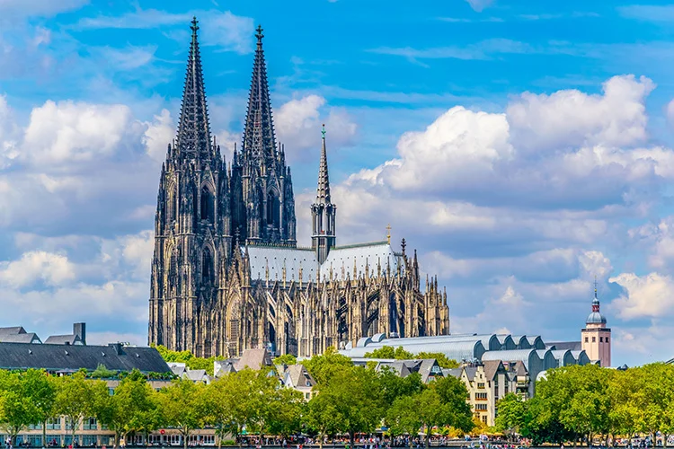
Cologne Cathedral
CologneNorth Rhine-WestphaliaA breathtaking Gothic masterpiece with twin 157-meter spires overlooking the Rhine River. It holds revered historic relics and survived heavy WWII bombardments.
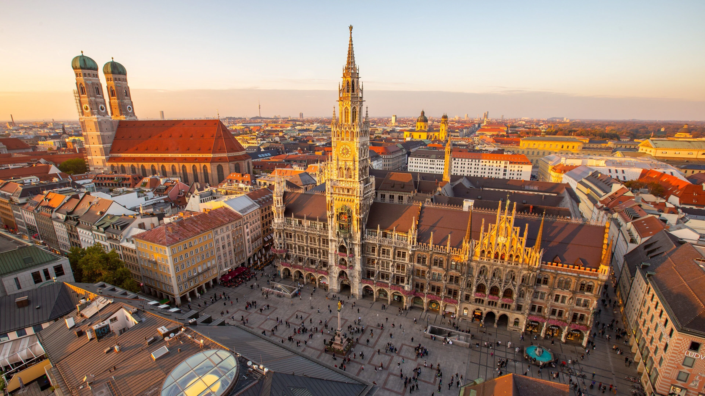
Munich
BavariaThe capital of Bavaria, known for its rich history, grand architecture, world-class museums, beer halls, high-tech industry, and close proximity to the Bavarian Alps.
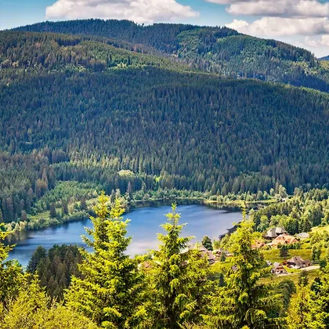
Black Forest
Baden-WürttembergA dense mountain region in southwestern Germany, celebrated for its evergreen landscapes, picturesque hiking trails, thermal spa towns, cuckoo clocks, and folk tales.
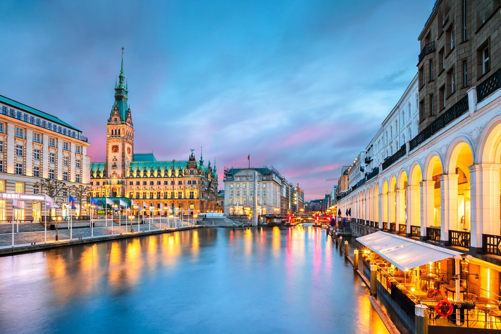
Hamburg
Northern GermanyA major northern port city characterized by its maritime heritage. It has historic brick warehouse districts (Speicherstadt), scenic canals, and a famous nightlife and music district.
Immigration
Germany welcomes skilled workers, students, and researchers through clear legal pathways made to address demographic changes. With the modern Opportunity Card (Chancenkarte) and simple Blue Card requirements, eligible candidates can easily obtain legal residency and work permissions if they meet education, income, or language standards.
Explore Your Options on the Official Portal
Discover your pathways to living, studying, and working in Germany. Use the official government interactive guide to check your visa eligibility, qualification recognition, and legal entry requirements.
Visit Official Portal ↗Common visa types
⚠️Always check with the corresponding official agency. This table might not be up to cardTag and different rules apply to different origin countries.
| Visa type | Duration | Processing time | Notes |
|---|---|---|---|
| Tourist / Schengen Visa | Up to 90 days | 2-4 weeks | - |
| Work | Up to 4 years | 4-12 weeks | Requires a recognized degree/vocational training and a concrete job offer from a German employer. |
| EU Blue Card | Up to 4 years | 3-8 weeks | Fast-track work permit for high earners/in-demand specialists. Leads to PR in 21-27 months. |
| Student | Duration of studies + 18 months | 6-12 weeks | - |
| Family Reunification | 1 to 3 years | 8-16 weeks | Basic German (A1) usually required. |
| Residency | Permanent | 4-12 weeks | Settlement permit (Niederlassungserlaubnis) applied for after 2-5 years of legal residence. |
| Opportunity Card (Chancenkarte) | Up to 1 year | 4-8 weeks | Points-based job-seeker permit. Allows part-time work (up to 20 hrs/week) while looking for a job. |
| Freelancer/Digital nomad | 1 to 3 years | 8-16 weeks | Germany has no official Digital Nomad Visa. Remote workers/freelancers must use the Freiberufler visa. |